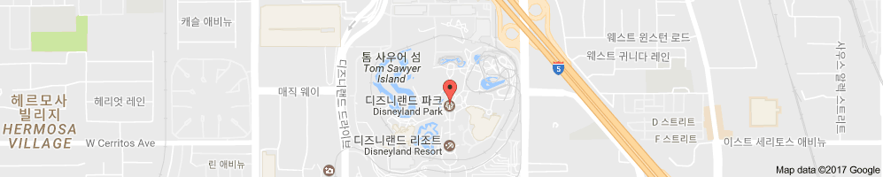
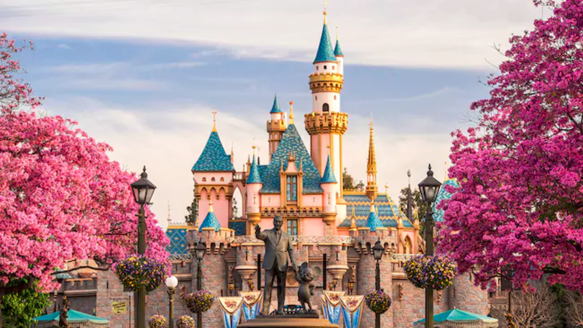
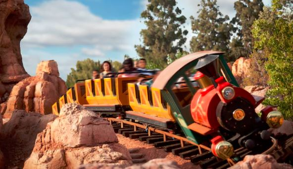
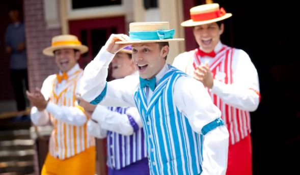

전세계에 있는 디즈니 랜드 중 처음으로 만들어진 캘리포니아 디즈니 랜드에 대해 살펴보자.
월트 디즈니 컴퍼니의 자회사인 월트 디즈니 파크 앤 리조트가 운영하는 미국 캘리포니아 주 오렌지 군 애너하임에 위치한 테마파크이다.

디즈니 랜드의 정문은 디즈니 영화 오프닝에서 등장하는 성과 유사하다.

Disneyland Park Hours : 9:00 AM to 10:00 PM
54개의 어트랙션(놀이기구) 와 17개의 공연을 제공한다.


 디즈니 랜드를 소개합니다.
디즈니 랜드를 소개합니다.